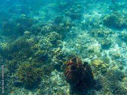

// This is the "Offline page" service worker
importScripts('https://storage.googleapis.com/workbox-cdn/releases/5.1.2/workbox-sw.js');
const CACHE = "pwabuilder-page";
// TODO: replace the following with the correct offline fallback page i.e.: const offlineFallbackPage = "offline.html";
const offlineFallbackPage = "ToDo-replace-this-name.html";
self.addEventListener("message", (event) => {
if (event.data && event.data.type === "SKIP_WAITING") {
self.skipWaiting();
}
});
self.addEventListener('install', async (event) => {
event.waitUntil(
caches.open(CACHE)
.then((cache) => cache.add(offlineFallbackPage))
);
});
if (workbox.navigationPreload.isSupported()) {
workbox.navigationPreload.enable();
}
self.addEventListener('fetch', (event) => {
if (event.request.mode === 'navigate') {
event.respondWith((async () => {
try {
const preloadResp = await event.preloadResponse;
if (preloadResp) {
return preloadResp;
}
const networkResp = await fetch(event.request);
return networkResp;
} catch (error) {
const cache = await caches.open(CACHE);
const cachedResp = await cache.match(offlineFallbackPage);
return cachedResp;
}
})());
}
});
Seafood — Offline

You're offline
The Seafood game is currently offline. If the game assets were cached earlier, you can still play. Otherwise reconnect to the internet and reload to download assets.